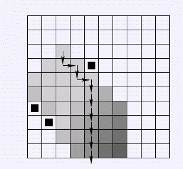

给出一个地图.上面有水,有故障点. 你要开着一个船走出这个地图. 问最少要多少步,否则无解. 注意这个船是关于轴对称的.
第一行给出数字N,代表地图的大小.N在[3,2000] 下面N行N列的字符矩阵 "."代表水 "X"代表故障点 "r"代表你的船的一部分. 也就是说你的船是由多个相连的r组成的.
最少的步数离开这个地图.
10 .......... .......... ..r....... .rrrX..... rrrrr..... .rrr...... X.r....... .Xr....... .......... ..........
10

1.当出不去的时候 要输出"NIE"
2.船是关于横轴或竖轴对称的
3.船的宽度是严格从小到大，再从大到小的